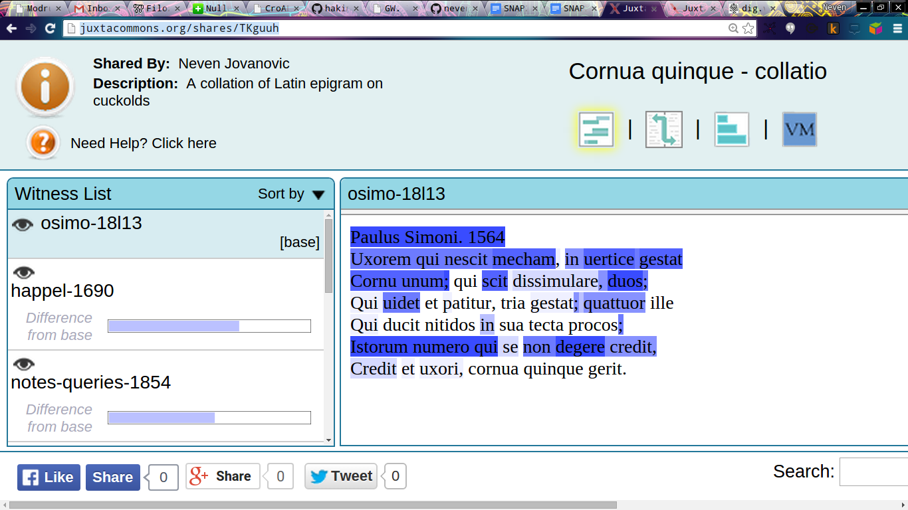

De scriptorum in Croatia et in Tyrolide
numeris et saeculis
Neven Jovanović / neven.jovanovic@ffzg.hr
Societatis Internationalis Studiis Neolatinis Provehendis Conventus sextus decimus
Vindobonae, die 6 Augusti 2015
Facultas philosophica Universitatis Zagrabiensis
Institutum philologiae classicae
Huius paginae inscriptio interretialis:
croala.ffzg.unizg.hr/sunoikisis/jovanovic-ianls-descriptorum.html
Etiam in Github
Duae historiae litterariae neo-Latinae


Olomouc, Češka, Vědecká knihovna, M I 159.

Juxta, epigram o rogonjama.